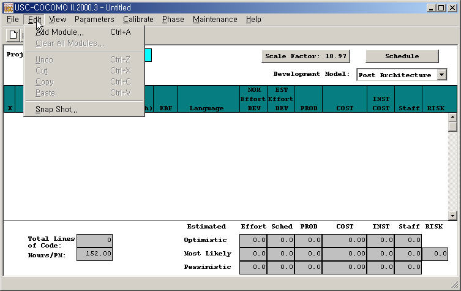

The Edit Menu option supplies several useful commands, which will enable you to establish a project more conveniently.
To select the Edit menu and its options, click on Edit with the mouse, then the Edit menu will appear as Figure 3-1.

The Add Module option adds a new module to the project that is currently being worked upon by the user. This Add Module function can be done by pressing the Add Module button in the Tool bar area.
The Clear All option erases all modules of the current project on the working window.
To Erase All Modules of Current Project
1. Choose Clear from the Edit menu. During the execution of the Clear command, if some changes have occurred on the currently viewed project and have not been saved, the warning dialog box will appear as Figure 3.2.
2. If you really want to clear, click Yes. If not, click No.
3. After Clear, all modules of current project will disappear.
The Snapshot option enables users to compare the effort estimation change for a project so that he/she can decide to apply the change or not. This function makes COCOMO more convenient and powerful for software project decision analyses.
The Snapshot command stores the current set of modules, effort adjustment factors and all other data associated with a project. At a later time this data can be restored.
To Compare the Overall Change of a Project
1. Choose Snapshot from the Edit menu. The Snapshot dialog box will initially appear as Figure 3-3.
2. Upon completing the modification of the project values, a comparison can be made between the previously snapped project and the modified project by clicking again upon the Snapshot option in the Edit menu.
3. Now the values in the upper part of the window will likely be different from the current values, in the lower part. To restore the upper values, click on Revert. The two sets of values are interchanged.
FIGURE 3-4 Snapshot Dialog Box-2
3.4 Undo
The Undo option retracts the previous
cut or paste done on a module.
To Retract Previous Cut/Paste for a Module
1. Choose Undo from the Edit menu with the mouse.
2. The changed module will go back to its previous status.
The Cut option copies a module into the cut buffer and removes it from the current project. The cut module can be used for Paste.
To Cut a Module and Remove It From the CLEF
1. Check the module which is to be cut. The Check boxes for modules are located in the leftmost column of the CLEF area. Place the mouse in the box just to the left of the module name, and click.
2. Choose Cut from the Edit menu with the mouse.
3. The cut module disappears.
The Copy option copies a module. The copied module can be used for Paste.
To Copy a Module
1. Check the module which is to be copied. The Check boxes for modules are located in the leftmost column of the CLEF area.
2. Choose Copy from the Edit menu with the mouse.
3. The cross sign in the check box disappears.
The Paste option pastes a previously copied or cut module in the CLEF.
To Paste a Previously Copied or Cut Module
1. Check the module above which the previously copied or cut module is to be pasted. The Check boxes for modules are located in the leftmost column of CLEF area.
2. Choose Paste from the Edit menu with the mouse.
3. The pasted module appears at the checked position, and the modules lower than it were pushed one row down.
4. If there is no module checked, the
Paste will attach the previously copied or cut module at the end.